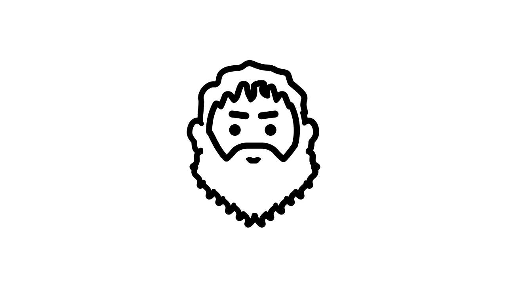
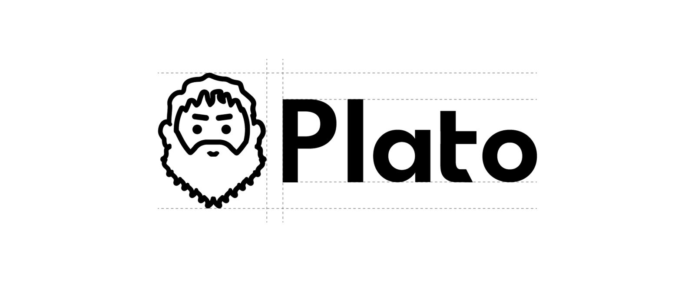
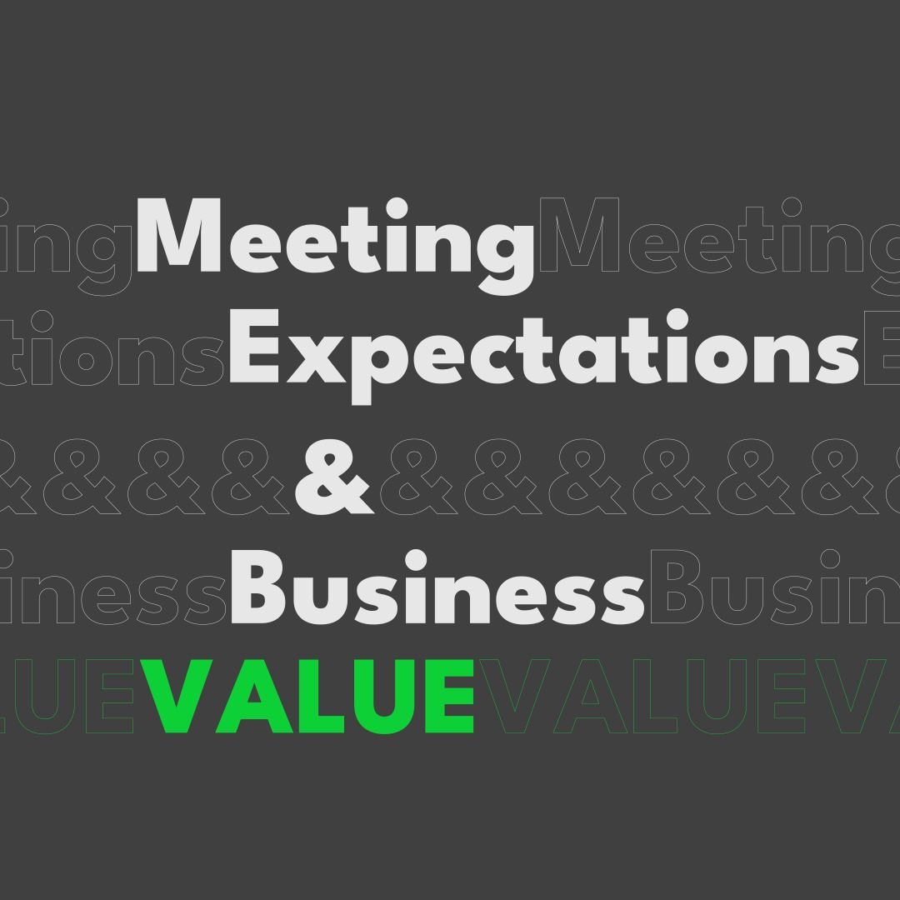
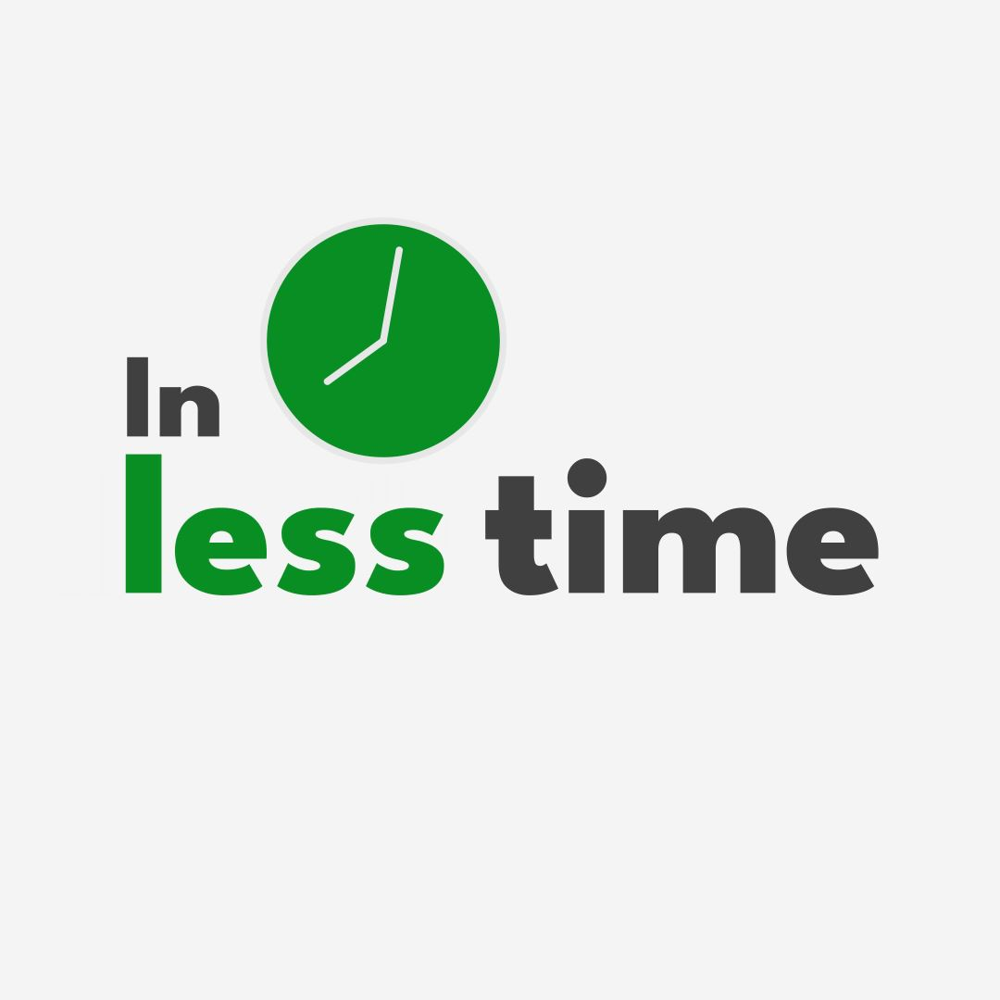
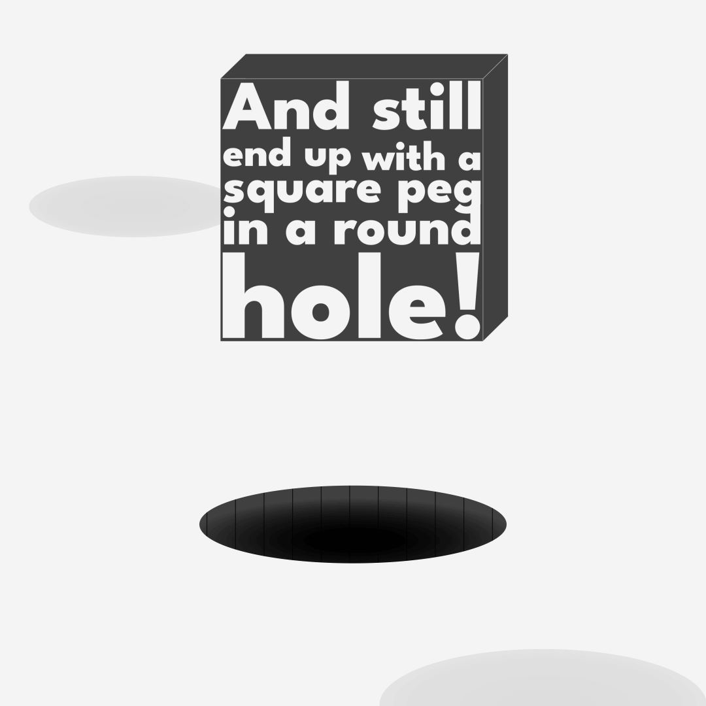
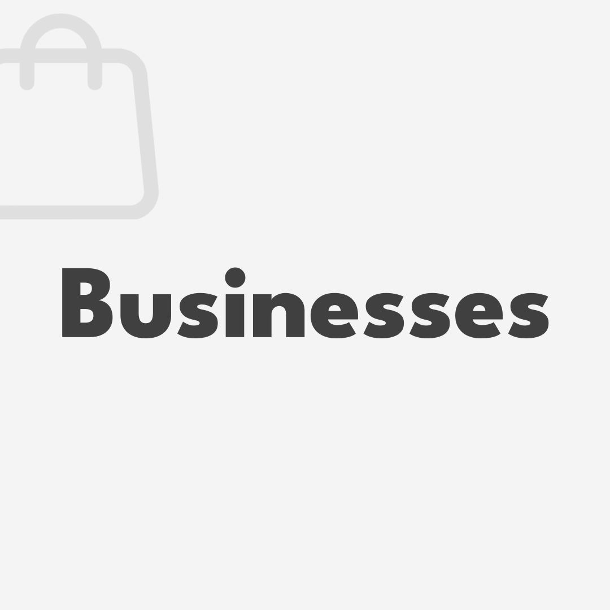
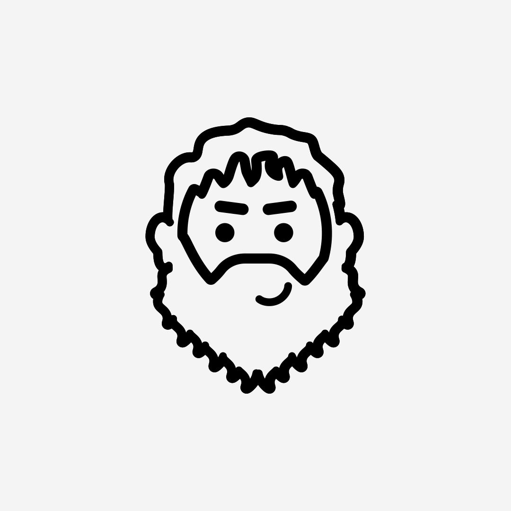
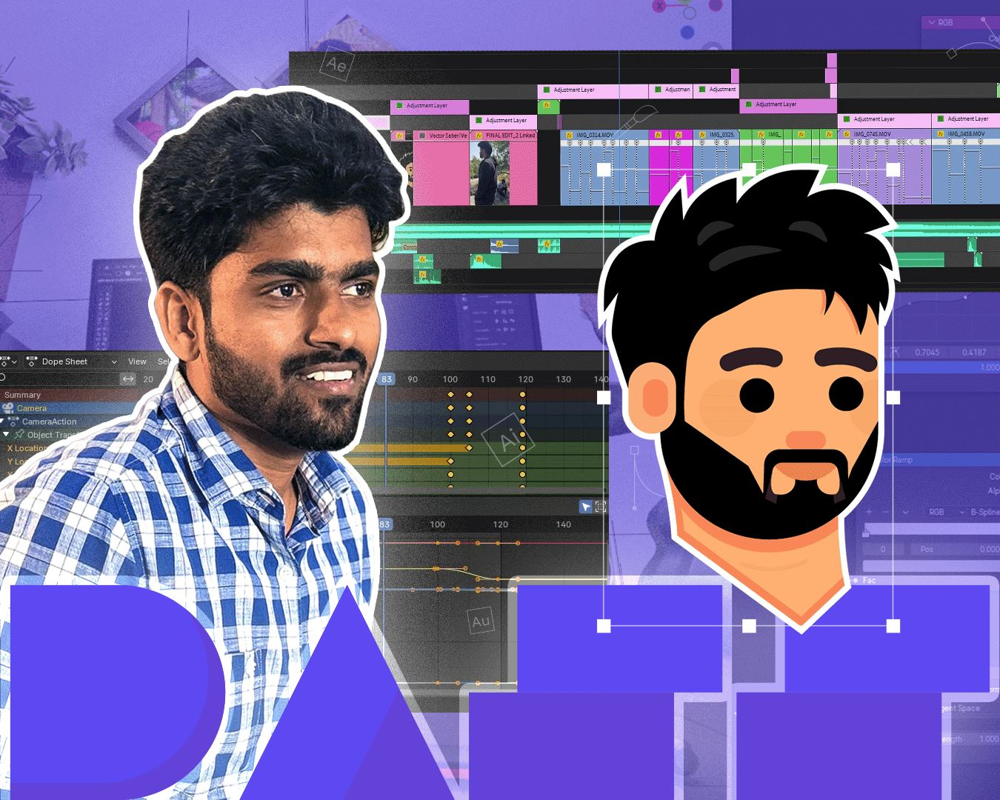
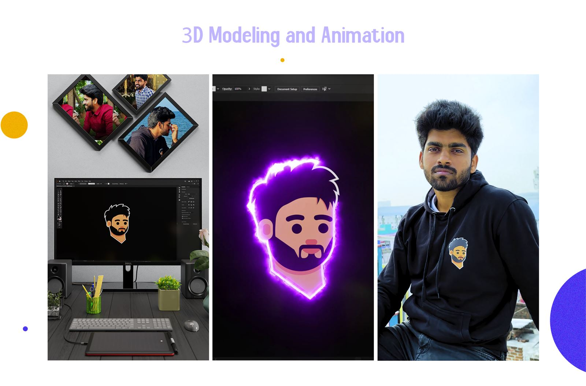

Plato
Identity for a SaaS product at MindBridges that helps enterprise teams manage projects and knowledge. The mark is a friendly line drawing of the philosopher: approachable enough for a product, clear enough for an app icon. I also wrote the brand guidelines and built the team's SharePoint brand hub.
- Illustrator
- Photoshop
- After Effects




Social media design
Square covers from Plato's short-form social series. Bold type, one idea per post. The animated versions are on the video page.





Personal reel: vector face
I drew a vector portrait of myself, printed it on a T-shirt, shot footage wearing it, and built the reel's intro in Blender. Branding, print, 3D and editing in one 20-second loop.

